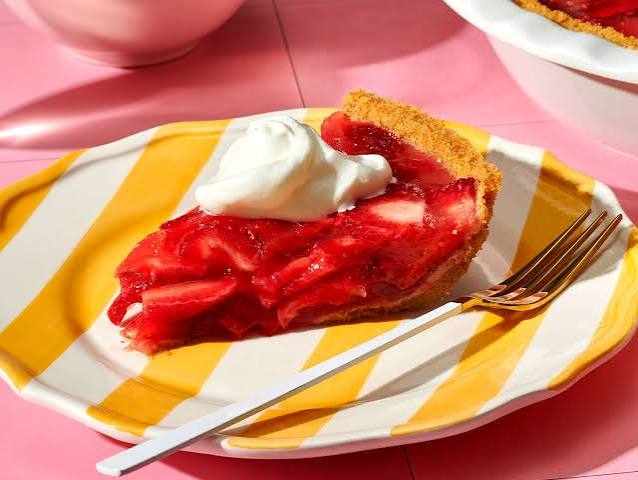

Strawberry Glazed Pie

Ingredients:
- 1 (9 inch) prepared graham cracker crust
- 1 (8 ounce) package cream cheese, softened
- 1 cup confectioners' sugar
- 1 teaspoon vanilla extract
- 2 cups sliced fresh strawberries
- 1 (3 ounce) package strawberry gelatin mix
- 1 cup boiling water
Back to Home page